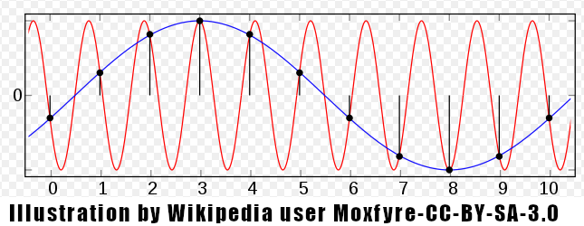
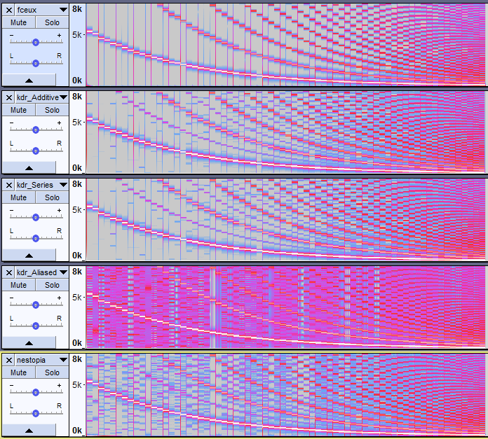
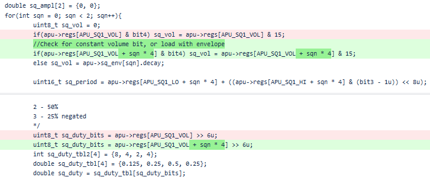

NES Emulation Saga - Writing a NES emulator
Part III: the APU
This is a series (part1, part2) of articles on the development of my own NES emulator.
It is coded in a mixture of C/C++, using Allegro 4, and is hosted at bitbucket
(link to repository).
The APU is NES' Audio Processing Unit. It has a very characteristic sound.
Here is a sample of my emulation of it, featuring Journey to Silius' famous opening theme:
I (correctly) predicted that emulating both the CPU/APU interface and the audio synthesis together would be challenging,
so I employed divide-and-conquer and tackled the latter first. As
this ESP232-based NES song player
(archive)(source code) I found in a preliminary Google search had done,
I opted to make use of VGM format music rips. Those are timed logs of register writes, which are much more approachable.
I fetched VGM packs from Super Mario Bros., Castlevania, Rockman, and Journey to Silius, which together form a very representative sample
of the great NES sound. Unzipped, the files were all .VGZ, so gzip-compressed. I could've used a bash script to pass them all through gzip,
but I opted to put together zlib code to decompress the files in memory with the help of
this example code(archive).
That done, the VGM specification was simple to follow and only a few commands needed
for the NES files I had.
Together with direct audio output, I also implemented an oscilloscope view and an option to record to a .WAV file. Inspecting the waveforms both
in real time and with Audacity was of good help.
The VGM player has its own repository at bitbucket here.
"Sound is supposed to be the hardest part to emulate. I think this is mostly because if you're not familiar with Nyquist aliasing,
square waves sound easy, until you hear them, and they sound terrible."
I knew although rather roughly the implications of the theorem, and thus already feared from the outset this task. mitxela proceeded to describe
how easy he had it with the synthesis tools in the WebAudio API. In my case, the API I have is a buffer of uint16_t which my code must fill,
so the challenge is increased.
For a tl;dr, the way aliasing works is that a frequency above half the sampling rate ("above the Nyquist") ends up present in the sampled signal,
but looking indistinguishable from ("aliasing") a lower frequency: 
Precisely, the "aliased frequency is the absolute difference between the actual signal frequency and the nearest integer multiple of the sampling
frequency". Together with the formula discussed below for the harmonic series of a rectangle wave, I put up
this spreadsheet
from which one can see the strength and position of aliased frequencies. Even the 100th term is contributing as much as 1% of the 1st, despite being aliased
to Hell and back, so the square wave is indeed challenging.
Additive synthesis
My first idea to avoid aliasing was to emulate what mitxela did, but without the magic from WebAudio createPeriodicWaveform - i.e. express each waveform
as a sum of sine waves, cutting off those with a frequency higher than half the sampling frequency, thus producing perfect band-limited
square or triangle waves. Other than mitxela's own maths, I also found a
good reference for the Fourier terms
(archive) belonging to some course on Fourier analysis. I found others, but the formulas were not as well explained or so succinctly.
This is what the code for the square wave ended up like, simplified for clarity:
double time_multiplier = 2 * pi / 44100.0;
/*
Duty cycle is as such:
0 - 12.5%
1 - 25%
2 - 50%
3 - 75% i.e. 25% but upside down
*/int sq_duty_tbl2[4] = {8, 4, 2, 4};
double sq_duty_tbl[4] = {0.125, 0.25, 0.5, 0.25};
sq_time += sq_freq;
//Synthesize band limited square wavefor(int n = 1; sq_freq * n < 44100 / 2; n++){
double An = 2 * sin(n * pi * sq_duty_tbl[sq_duty]) / (n * pi);
if(n % sq_duty_tbl2[sq_duty] == 0) continue;
sq_ampl += cos(sq_time * n) * An;
}
//Normalize to 0.0-1.0 range (although Gibbs' phenomenon exceeds the interval)
sq_ampl += sq_duty_tbl[sq_duty];
double time_multiplier = 2 * pi / 44100.0;
/*
Duty cycle is as such:
0 - 12.5%
1 - 25%
2 - 50%
3 - 75% i.e. 25% but upside down
*/
int sq_duty_tbl2[4] = {8, 4, 2, 4};
double sq_duty_tbl[4] = {0.125, 0.25, 0.5, 0.25};
sq_time += sq_freq;
//Synthesize band limited square wave
for(int n = 1; sq_freq * n < 44100 / 2; n++){
double An = 2 * sin(n * pi * sq_duty_tbl[sq_duty]) / (n * pi);
if(n % sq_duty_tbl2[sq_duty] == 0) continue;
sq_ampl += cos(sq_time * n) * An;
}
//Normalize to 0.0-1.0 range (although Gibbs' phenomenon exceeds the interval)
sq_ampl += sq_duty_tbl[sq_duty];
And the simpler still code for the triangle wave. The NES doesn't actually generate a pretty triangle wave,
the one it got has visible steps since it has only 4 bits of resolution. However, I actually preferred the sound of a real triangle wave,
and it was simpler to additive-synthesize.
tri_time += tri_freq;
////Synthesize band limited triangle wavefor(int n = 0; tri_freq * n < 44100 / 2; n++){
if((n % 2) == 0) continue;
double An = (1.0 - pow(-1, n)) / (pow(n, 2.0) * pow(pi, 2.0));
tri_ampl += cos(tri_time * n) * An;
}
//Normalize to 0.0-1.0 range
tri_ampl += 0.25;
tri_ampl *= 2.0;
tri_time += tri_freq;
////Synthesize band limited triangle wave
for(int n = 0; tri_freq * n < 44100 / 2; n++){
if((n % 2) == 0) continue;
double An = (1.0 - pow(-1, n)) / (pow(n, 2.0) * pow(pi, 2.0));
tri_ampl += cos(tri_time * n) * An;
}
//Normalize to 0.0-1.0 range
tri_ampl += 0.25;
tri_ampl *= 2.0;
I didn't at this point make an attempt to synthesize bandlimited noise or to fix the (much smaller in amplitude) aliasing from DPCM playback.
The main issue with this approach was that it is slow. The audio would glitch and pop as it could not keep up with real time
playback, and on top of CPU emulation it left the emulator extremely laggy.
A profiling log generated with the VerySleepy profiler shows that as expected most time
was being spent in the inner sine summation loops.
First, I changed the code to avoid integer to floating point conversions, with some small improvement. Next, I stored a precalculated table of the An series
of coefficients, without dramatic improvement.
I started looking into fancier ways to generate the waveforms, like using a full DCT algorithm or keeping tables of pre-synthesized waves. I tried getting
gcc to emit raw x87 fsin and fcos instructions, which it avoids
because they are very inaccurate in
certain situations
(archive), to no success, even with -O3 -ffast-math it still did that dreaded call sin, call cos. I was looking at some optimised ways to calculate
those functions, with many suggesting lookup tables or Taylor series. But there was a mention of generating co/sine series using those classic school
trigonometry equations:
sin(x+y)=sin(x)cos(y)+cos(x)sin(y)
cos(x+y)=cos(x)cos(y)-sin(x)sin(y)
I was happy to verify, in a series of Very Sleepy profiling logs, that the time taken by the inner loops now was under 25% of the baseline. I also
felt like a fool for not thinking of this before.
A comparison
I threw together a quick ROM to play chromatic scales from highest to lowest octaves, to compare the resulting sound:
inc noteCounter
bne ++
dec note
bpl +
lda #79
sta note
+ ldy note
lda #00000001b ; Enable square 1
sta $4015
lda #10111111b ; Constant full volume, halt length counter, 50% duty
sta $4000
lda periodTableLo,y ; Period low bits
sta $4002
lda periodTableHi,y ; Period high bits
sta $4003
++
inc noteCounter
bne ++
dec note
bpl +
lda #79
sta note
+ ldy note
lda #00000001b ; Enable square 1
sta $4015
lda #10111111b ; Constant full volume, halt length counter, 50% duty
sta $4000
lda periodTableLo,y ; Period low bits
sta $4002
lda periodTableHi,y ; Period high bits
sta $4003
++
I then did recordings in Nestopia, FCEUX and my own emulator, and loaded them up in Audacity, and used the spectrogram view. It is very telling.
From top to bottom, FCEUX, "kdrNES" with (slow) additive synthesis, kdrNES using the cosine series (of course identical), kdrNES with naive
aliased square wave synthesis, and Nestopia.

kdrNES with additive synthesis does well, placing between FCEUX and Nestopia in terms of cleanness between harmonics.
As expected from the spreadsheet calculations, the naive method is full of ghost frequencies in all ranges, and the spectrogram is painted red with them
except for the few gaps where note periods must be an integer factor of the sampling frequency.
Low-pass filter
The NES at least in effect seems to have a low-pass filter at 14kHz.
I opted for a FIR (Finite Impulse Response) over an IIR (Infinite Impulse Response) filter due to believing it would have better phase
characteristics.
I am only familiar with FIR (and DSP lingo in general) from implementing image scaling, where a Mitchell-Netravali or Lanczos filter is a good
standard and the formula for it is simple to turn into a convolution matrix. This though requires a custom filter, and Googling how to calculate
the coefficients for a filter turns up DSP tutorials and introductory theory involving ideal sinc filters. Googling "fir filter design tools"
had more success, and I found the Iowa Hills FIR Filter design tool(archive). It was relatively straightforward
to use and generates the coefficients as a .TXT file.
I designed a low-pass filter with the Kaiser method as it was highly praised, and set it for minimum phase as we don't want to mess with the timing
of the game sounds. With the desired frequency cutoff of 14kHz. I arbitrarily picked 63 taps.
Emulator integration
In the NES the APU runs at 1.79 MHz together with the CPU. My APU runs at 44.1kHz, even the logic, which will have timings off of course but is enough
for a low accuracy emulator. It of course won't allow for games that use the APU to time raster chasing tricks, which are only a few.
My approach was to keep a CPU cycles counter, and on every APU register access, before completing the read or write, convert those to an equivalent
number of 44.1kHz cycles and run the APU, which updates the registers and also buffers the next samples to be played. I keep two copies of the APU
registers, since some are used for other things like joystick reading, and have to copy them to and fro.
voidSyncAPU(bool sync_regs = true){
if(sync_regs){
memcpy(apu_state.regs, apu, sizeof(apu));
memcpy(apu_state.reg_w, apu_w, sizeof(apu));
}
int nsamples = (apuCycles * 44100) / apu_state.clock;
nsamples = apu_sample(&apu_state, &ptrSampled, ptrSampled + nsamples, nsamples);
apuCycles -= (nsamples * apu_state.clock) / 44100;
memcpy(apu, apu_state.regs, sizeof(apu));
memcpy(apu_w, apu_state.reg_w, sizeof(apu));
}
While playing music alone with the VGM Player it wasn't ever obvious, likely because the square channels would play notes similar to each other,
but once integrated with the emulator and the games would have sound effects sharing the channels (usually the 1st) and interrupting notes
of the music, there was a clear glitching of the volume envelopes. Turned out I forgot to index by channel number and used the first channel envelope
for both:

Conclusion
The divide-and-conquer develop the APU separate from the rest through VGM was a very effective approach and reduced frustration from bugs, while also
allowing high quality test material from the beginning.
Sticking to additive synthesis paid out in the end. It remains more CPU-intensive than methods such as wavetables and the gold standard in NES emulation that
is BLEP, but it is conceptually simple and doesn't obfuscate the sampler's working,
so I feel stubbornly validated.